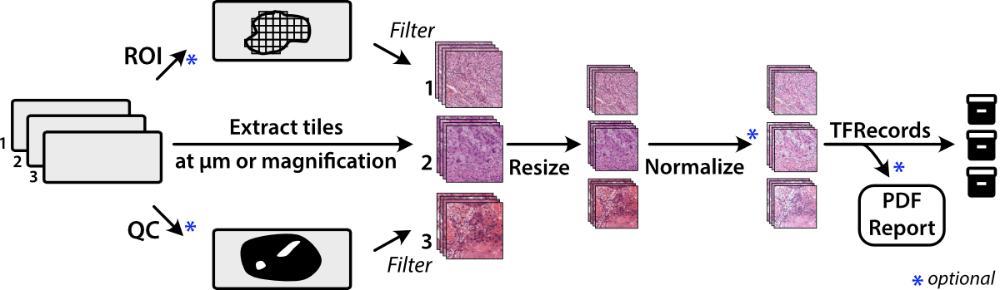
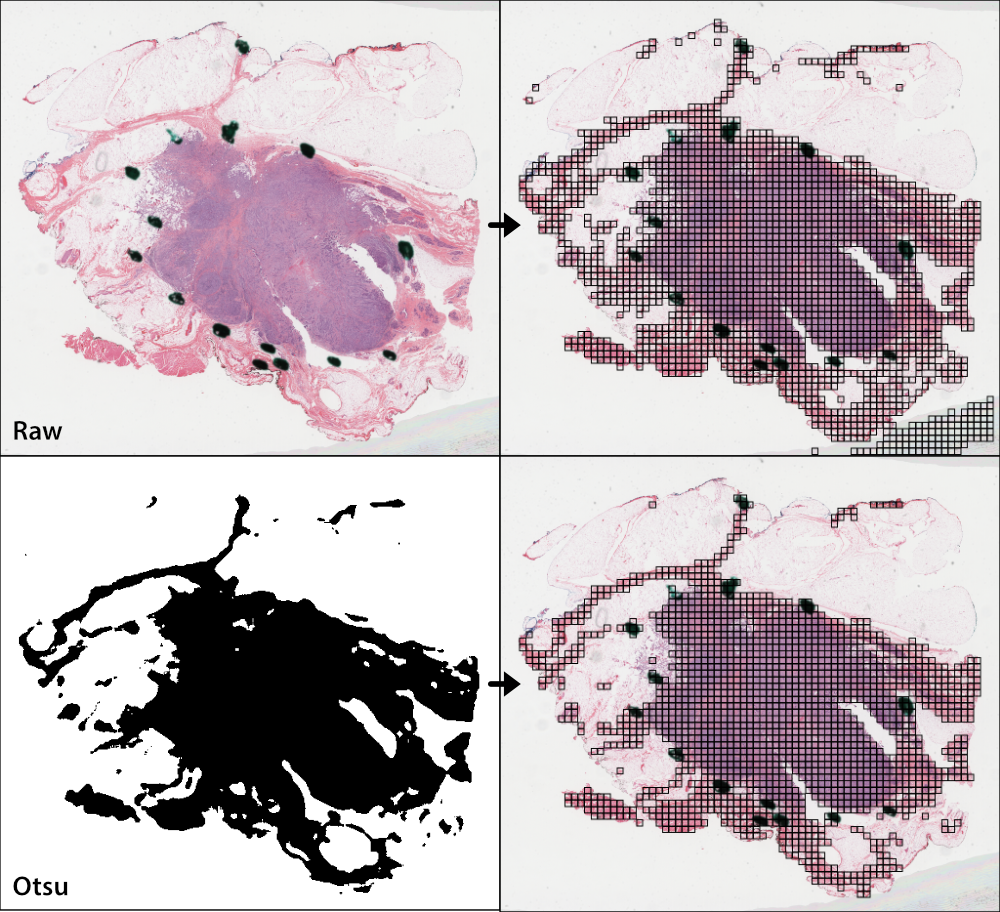
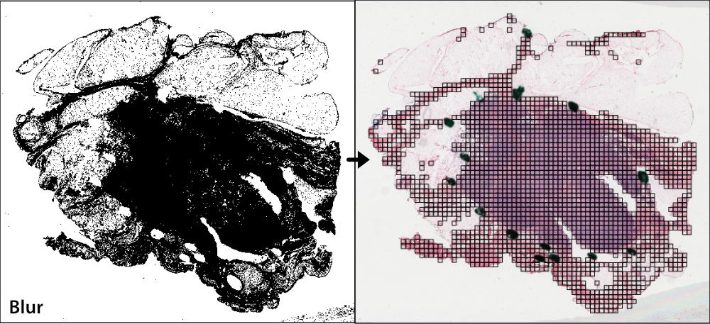

Slide Processing¶
Whole-slide histopathological images present many challenges for machine learning researchers, as these large gigapixel images may contain out-of-focus regions, pen marks, uneven staining, or varying optical resolutions. Slideflow provides tools for both flexible and computationally efficient slide processing in order to build datasets ready for machine learning applications.
Most tools in Slideflow work with image tiles - extracted sub-regions of a whole-slide image - as the primary data source. For efficiency, image tiles are first buffered into TFRecords , a binary file format that greatly improves IO throughput. Although training can be performed without using TFRecords (see Training without TFRecords), we recommend tile extraction as the first step for most projects.
Tile extraction¶
Image tiles are extracted from whole-slide images using either slideflow.Project.extract_tiles() or slideflow.Dataset.extract_tiles(). When using the Project interface, the only arguments required are tile_px and tile_um, which determine the size of the extracted image tiles in pixels and microns:
P.extract_tiles(tile_px=299, tile_um=302)
and when using a slideflow.Dataset, no arguments are required.
dataset.extract_tiles()
Tiles will be extracted at the specified pixel and micron size and stored in TFRecord format. Loose image tiles (*.jpg or *.png format) can also be saved with the argument save_tiles=True.
See the slideflow.Dataset.extract_tiles() API documentation for customization options.
Note
Slide scanners may have differing microns-per-pixel (MPP) resolutions, so “10X” magnification from one scanner may be slightly different than “10X” on another scanner. Specifying a fixed tile_um ensures all image tiles have both the same pixel size and micron size. This MPP-harmonization step uses the Libvips resize function on extracted images. To disable this step and instead extract tiles at a given downsample layer, set tile_um equal to a magnification level rather than micron size:
P.extract_tiles(tile_px=299, tile_um="10x")
Cell segmentation¶
An alternative to extracting tiles in a grid across whole-slide images is extracting tiles at detected cell centroids. This is discussed separately in Cell Segmentation.
Regions of Interest¶
Tile extraction can be optionally restricted based on pathologist-annotated Regions of Interest (ROI), allowing you to enrich your dataset by only using relevant sections of a slide.
We offer two methods for annotating ROIs - Slideflow Studio and QuPath. Please see the Slideflow Studio section for instructions on generating ROI annotations using the Slideflow interface.
If you are using QuPath, annotate whole-slide images using the Polygon tool. Then, click Automate -> Show script editor. In the box that comes up, click File -> Open and load the qupath_roi.groovy script (QuPath 0.2 or greater) or qupath_roi_legacy.groovy (QuPath 0.1.x), scripts available on GitHub. Click Run -> Run if using QuPath 0.2 or greater, or Run -> Run for Project if using QuPath 0.1.x. ROIs will be exported in CSV format in the QuPath project directory, in the subdirectory “ROI”.
Once ROI CSV files are generated, ensure they are placed in the folder expected by your Project or Dataset based on their respective configurations.
The roi_method argument to the extract_tiles() functions allow you to control how ROIs are used. Options include:
'auto': Default behavior. For slides with a valid ROI, extract tiles from within ROIs only. For slides without ROIs, extract from the whole-slide image.'inside': Extract from within ROIs, and skip any slides missing ROIs.'outside': Extract from outside ROIs, and skip any slides missing ROIs.'ignore': Ignore all ROIs, extracting from whole-slide images.
Note
Nested ROIs will be rendered as holes.
By default, ROIs filter tiles based on the center point of the tile. Alternatively, you can filter tiles based on the proportion of the tile inside an ROI by using the argument roi_filter_method. If roi_filter_method is set to a float (0-1), this value will be interpreted as a proportion threshold. If the proportion of a tile inside an ROI is greater than this number, the tile is included. For example, if roi_filter_method=0.7, a tile that is 80% inside of an ROI will be included, but a tile that is only 60% inside of an ROI will be excluded.
ROIs can optionally be assigned a label. Labels can be added or changed using Slideflow Studio, or by adding a “label” column in the ROI CSV file. Labels can be used to train strongly supervised models, where each tile is assigned a label based on the ROI it is extracted from, rather than inheriting the label of the whole-slide image. See the developer note Strong Supervision with Tile Labels for more information.
To retrieve the ROI name (and label, if present) for all tiles in a slide, use slideflow.WSI.get_tile_dataframe(). This will return a Pandas DataFrame with the following columns:
loc_x: X-coordinate of tile center
loc_y: Y-coordinate of tile center
grid_x: X grid index of the tile
grid_y: Y grid index of the tile
roi_name: Name of the ROI if tile is in an ROI, else None
roi_desc: Description of the ROI if tile is in ROI, else None
label: ROI label, if present.
The loc_x and loc_y columns contain the same tile location information stored in TFRecords.
You can also retrieve this information for all slides in a dataset by using slideflow.Dataset.get_tile_dataframe(), which will return a DataFrame with the same columns as above, plus slide column.
Masking & Filtering¶
Slideflow provides two approaches for refining where image tiles should be extracted from whole-slide images: slide-level masking and tile-level filtering. In these next sections, we’ll review options for both approaches.
Otsu’s thresholding¶
Otsu’s thresholding is a slide-based method that distinguishes foreground (tissue) from background (empty slide). Otsu’s thresholding is performed in the HSV colorspace and yields similar results to grayspace filtering, a tile-level filtering method described below.
To apply Otsu’s thresholding to slides before tile extraction, use the qc argument of the .extract_tiles() functions.
from slideflow.slide import qc
# Use this QC during tile extraction
P.extract_tiles(qc=qc.Otsu())
You can also apply Otsu’s thresholding to a single slide with the slideflow.WSI.qc() method. See the WSI API documentation for more information on working with individual slides.
# Apply Otsu's thresholding to a WSI object
wsi = sf.WSI(...)
wsi.qc(qc).show()
Gaussian blur filtering¶
Gaussian blur masking is another slide-based method that can detect pen marks and out-of-focus areas, and is particularly useful for datasets lacking annotated Regions of Interest (ROIs). Gaussian blur masking is applied similarly, using the qc argument.
Two versions of Gaussian blur masking are available: qc.Gaussian and qc.GaussianV2 (new in Slideflow 2.1.0). The latter is the default and recommended version, as it is more computationally efficient. The former is provided for backwards compatibility.
from slideflow.slide import qc
# Use this QC during tile extraction
P.extract_tiles(qc=qc.GaussianV2())
By default, Gaussian blur masking is calculated at 4 times lower magnification than the tile extraction MPP (e.g., when extracting tiles at 10X effective magnification, Gaussian filtering would be calculated at 2.5X). This is to reduce computation time. You can change this behavior by manually setting the mpp argument to a specific microns-per-pixel value.
Gaussian blur masking is performed on gray images. The sigma argument controls the standard deviation of the Gaussian blur kernel. The default value of 3 is recommended, but you may need to adjust this value for your dataset. A higher value will result in more areas being masked, while a lower value will result in fewer areas being masked.
from slideflow.slide import qc
# Customize the Gaussian filter,
# using a sigma of 2 and a mpp of 1 (10X magnification)
gaussian = qc.GaussianV2(mpp=1, sigma=2)
You can also use multiple slide-level masking methods by providing a list to qc.
from slideflow.slide import qc
qc = [
qc.Otsu(),
qc.Gaussian()
]
P.extract_tiles(qc=qc)
If both Otsu’s thresholding and blur detection are being used, Slideflow will calculate Blur Burden, a metric used to assess the degree to which non-background tiles are either out-of-focus or contain artifact. In the tile extraction PDF report that is generated (see next section), the distribution of blur burden for slides in the dataset will be plotted on the first page. The report will contain the number of slides meeting criteria for warning, when the blur burden exceeds 5% for a given slide. A text file containing names of slides with high blur burden will be saved in the exported TFRecords directory. These slides should be manually reviewed to ensure they are of high enough quality to include in the dataset.
DeepFocus¶
Slideflow also provides an interface for using DeepFocus to identify in-focus regions. DeepFocus is a lightweight neural network that predicts whether a section of a slide is in- or out-of-focus. When used as a slide-level masking method, DeepFocus will filter out-of-focus tiles from a slide. By default, DeepFocus is applied to slides at 40X magnification, although this can be customized with the tile_um argument.
from slideflow.slide import qc
deepfocus = qc.DeepFocus(tile_um='20x')
slide.qc(deepfocus)
Alternatively, you can also retrieve raw predictions from the DeepFocus model for a slide by calling the deepfocus object on a slideflow.WSI object, passing the argument threshold=False:
preds = deepfocus(slide, threshold=False)
Custom deep learning QC¶
You can also create your own deep learning slide filters. To create a custom deep learning QC method like DeepFocus, create a custom slide filter that inherits slideflow.slide.qc.StridedDL. For example, to manually recreate the above DeepFocus model, first clone the TF2 fork on GitHub, which contains the DeepFocus architecture and model weights, and create a custom class as below:
from slideflow.slide.qc import strided_dl
from deepfocus.keras_model import load_checkpoint, deepfocus_v3
class CustomDeepFocus(strided_dl.StridedDL):
def __init__(self):
model = deepfocus_v3()
checkpoint = '/path/to/deepfocus/checkpoints/ver5'
load_checkpoint(model, checkpoint)
super().__init__(
model=model,
pred_idx=1,
tile_px=64,
tile_um='40x'
)
Then, supply this class to the qc argument as above.
P.extract_tiles(qc=CustomDeepFocus())
See slideflow.slide.qc for more information on the API for further QC customization.
Segmentation Models (U-Net)¶
Slideflow also provides an interface for both training and using segmentation models (e.g. U-Net, FPN, DeepLabV3) for slide-level masking. This is discussed separately in Tissue Segmentation.
Grayspace filtering¶
Grayspace filtering is a tile-based method that detects the amount of grayspace in a given image tile and discards the tile if the content exceeds a set threshold. RGB image tiles are converted to the HSV spectrum, and the fraction of pixels with saturation below a certain threshold is calculated. This filtering is performed separately for each tile as it is being extracted. Relevant arguments for grayspace filtering include:
grayspace_threshold: Saturation value, below which a pixel is considered gray. Range 0-1. Defaults to 0.05.grayspace_fraction: Image tiles with grayspace above this fraction will be discarded. Defaults to 0.6.
Grayspace filtering is enabled by default, and can be disabled by passing grayspace_fraction=1 to the .extract_tiles() functions.
Grayspace filtering is similar to Otsu’s thresholding, with both operating in the HSV colorspace. Otsu’s thresholding is ~30% faster than grayspace filtering for slides with accessible downsample layers, but if downsample layers are not stored in a given slide or are inaccessible (e.g. enable_downsample=False), grayspace filtering may be faster. Grayspace filtering is more reliable than Otsu’s thresholding for slides with abundant pen marks or other artifact, which can present issues for the Otsu’s thresholding algorithm.
Whitepsace filtering¶
Whitespace filtering is performed similarly to grayspace filtering. Whitespace is calculated using overall brightness for each pixel, then counting the fraction of pixels with a brightness above some threshold. As with grayspace filtering, there are two relevant arguments:
whitespace_threshold: Brightness value, above which a pixel is considered white. Range 0-255. Defaults to 230.whitespace_fraction: Image tiles with whitespace above this fraction will be discarded. Defaults to 1.0 (disabled).
Whitespace filtering is disabled by default.
Stain normalization¶

Image tiles can undergo digital Hematoxylin and Eosin (H&E) stain normalization either during tile extraction or in real-time during training. Real-time normalization adds CPU overhead during training and inference but offers greater flexibility, allowing you to test different normalization strategies without re-extracting tiles from your entire dataset.
Available stain normalization algorithms include:
macenko: Original Macenko paper.
macenko_fast: Modified Macenko algorithm with the brightness standardization step removed.
reinhard: Original Reinhard paper.
reinhard_fast: Modified Reinhard algorithm with the brightness standardization step removed.
reinhard_mask: Modified Reinhard algorithm, with background/whitespace removed.
reinhard_fast_mask: Modified Reinhard-Fast algorithm, with background/whitespace removed.
vahadane: Original Vahadane paper.
augment: HSV colorspace augmentation.
cyclegan: CycleGAN-based stain normalization, as implemented by Zingman et al (PyTorch only)
The Macenko and Reinhard stain normalizers are highly efficient, with native Tensorflow, PyTorch, and Numpy/OpenCV implementations, and support GPU acceleration (see performance benchmarks).
During tile extraction¶
Image tiles can be normalized during tile extraction by using the normalizer and normalizer_source arguments. normalizer is the name of the algorithm. The normalizer source - either a path to a reference image, or a str indicating one of our presets (e.g. 'v1', 'v2', 'v3') - can also be set with normalizer_source.
P.extract_tiles(
tile_px=299,
tile_um=302,
normalizer='reinhard'
)
Contextual stain normalization is supported when normalizing during tile extraction.
On-the-fly¶
The stain normalization implementations in Slideflow are fast and efficient, with separate Tensorflow-native, PyTorch-native, and Numpy/OpenCV implementations. In most instances, we recommend performing stain normalization on-the-fly as a part of image pre-processing, as this provides flexibility for changing normalization strategies without re-extracting all of your image tiles.
Real-time normalization can be performed by setting the normalizer and/or normalizer_source hyperparameters.
from slideflow.model import ModelParams
hp = ModelParams(..., normalizer='reinhard')
If a model was trained using a normalizer, the normalizer algorithm and fit information will be stored in the model metadata file, params.json, in the saved model folder. Any Slideflow function that uses this model will automatically process images using the same normalization strategy.
When stain normalizing on-the-fly, stain augmentation becomes available as a training augmentation technique. Read more about stain augmentation.
The normalizer interfaces can also be access directly through slideflow.norm.StainNormalizer. See slideflow.norm for examples and more information.
Performance optimization¶
As tile extraction is heavily reliant on random access reading, significant performance gains can be experienced by either 1) moving all slides to an SSD, or 2) utilizing an SSD or ramdisk buffer (to which slides will be copied prior to extraction). The use of a ramdisk buffer can improve tile extraction speed by 10-fold or greater! To maximize performance, pass the buffer path to the argument buffer.
Extraction reports¶
Once tiles have been extracted, a PDF report will be generated with a summary and sample of tiles extracted from their corresponding slides. An example of such a report is given below. Reviewing this report may enable you to identify data corruption, artifacts with stain normalization, or suboptimal background filtering. The report is saved in the TFRecords directory.

In addition to viewing reports after tile extraction, you may generate new reports on existing tfrecords with slideflow.Dataset.tfrecord_report(), by calling this function on a given dataset. For example:
dataset = P.dataset(tile_px=299, tile_um=302)
dataset.tfrecord_report("/path/to/dest")
You can also generate reports for slides that have not yet been extracted by passing dry_run=True to slideflow.Dataset.extract_tiles().